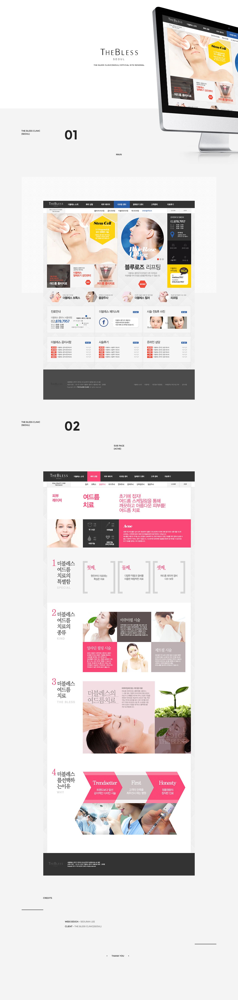

- The Bless Clinic(Seoul Univ) Official Site Renewal
- 클라이언트가 고급스러운 느낌보다는, 접하기 쉽고 눈에 띄는 디자인을 원하셨기 때문에 색상의 선택을 vivid하게 살리고 메인 이미지에도 진한 색을 같이 깔아주어 눈에 띄도록 디자인 하였다. 그러면서도 너무 지저분해 보이지 않게 색을 틔워주는 공간 활용을 통해 홈페이지의 균형감을 맞추었다.
-
Concept:Vivid, Diversity
Date:2014.12
Color:blackwhitelightgray
Skills:Phostoshop
-
Client:The Bless Clinic(Seoul Univ)
My role:Concept, Design
- 